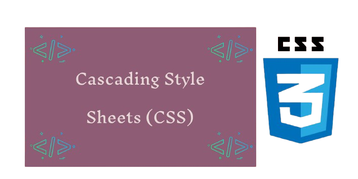
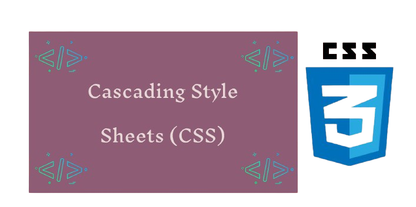

СSS - dasturchilarga veb-sahifa taqdimotini uning tuzilishi va mamunidan ajratish imkonini beradi. Bu shunianglatadigiki, bir xil HTML hujjati turli xil СSS - fayllariga oddiygina ulanish orqali bir necha usulda uslublanishi mumkin. Bu, ayniqsa, sezgir dizaynlarni yaratish uchun foyda'lidir, chunki bir xil HTML turli ekran o'lchamilari uchun turli tartiblarni yaratish uchun ishlatilishi mumkin.